K562 Neither DNase matched - State 24:Quies (n=38)
K562 Neither DNase matched - State 24:Quies (n=38)
[
See group descriptions
]
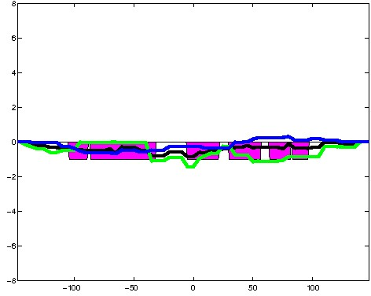
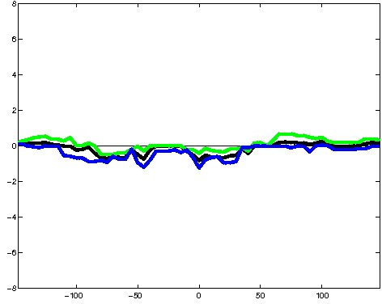
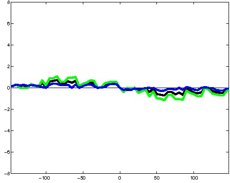
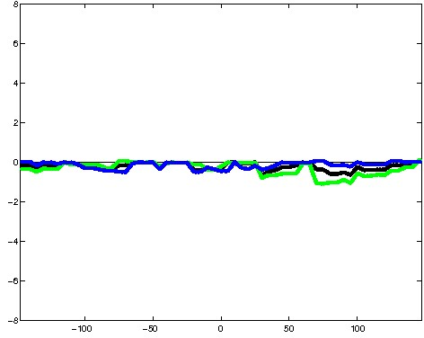
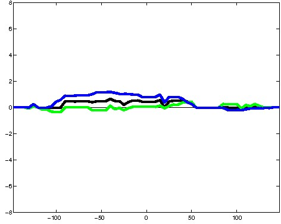
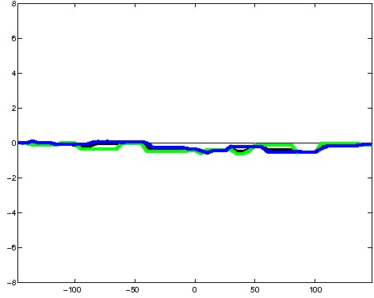
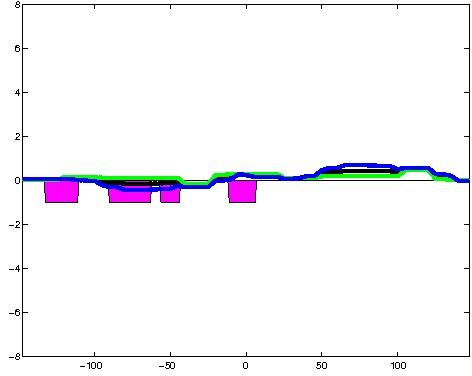
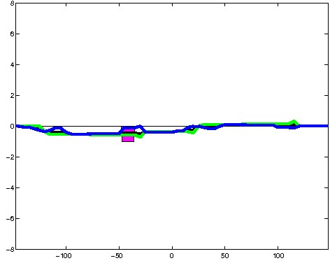
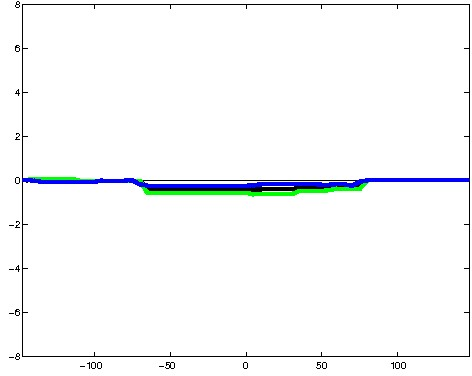
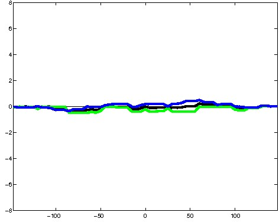
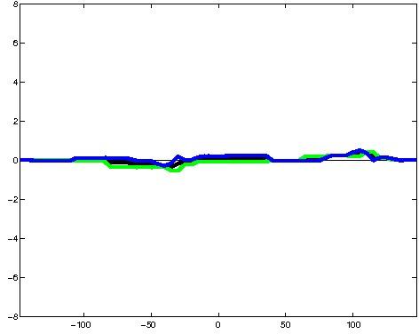
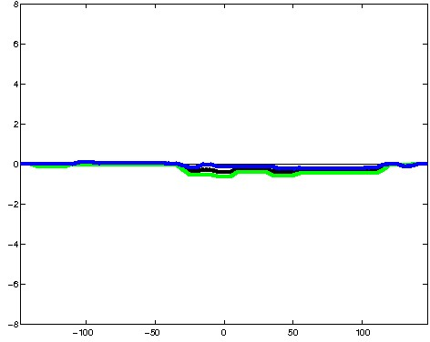
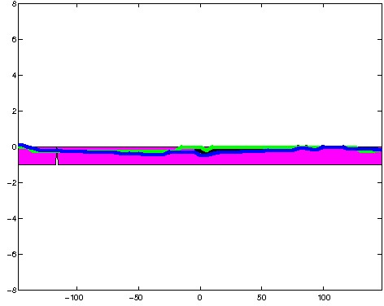
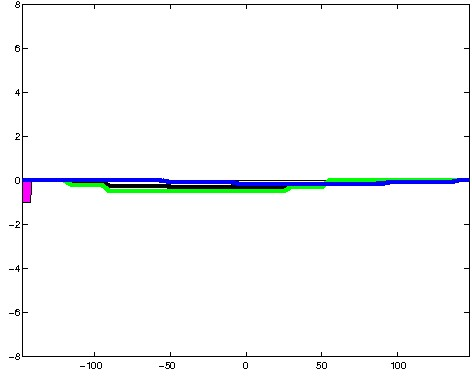
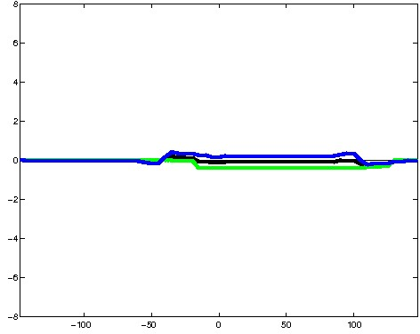
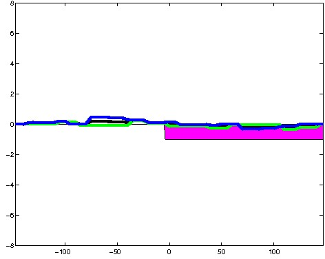
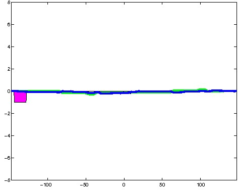
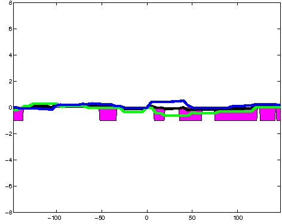
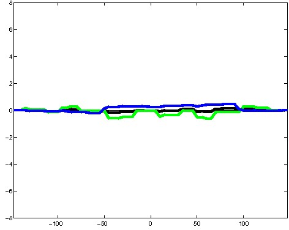
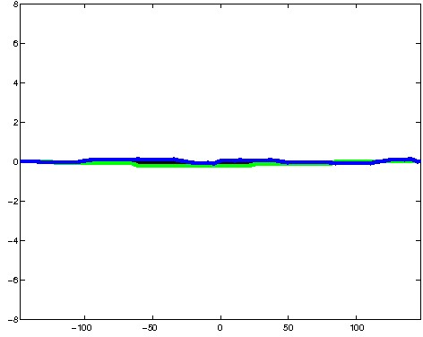
; picked in K562 (state 24:Quies, DNase); matched; chr14:79,745,509-79,745,803 (295bp)") 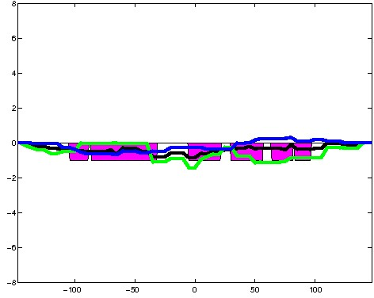
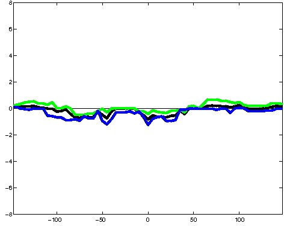
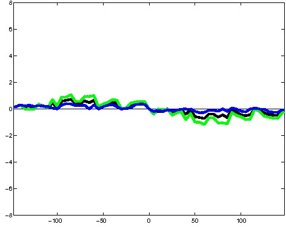
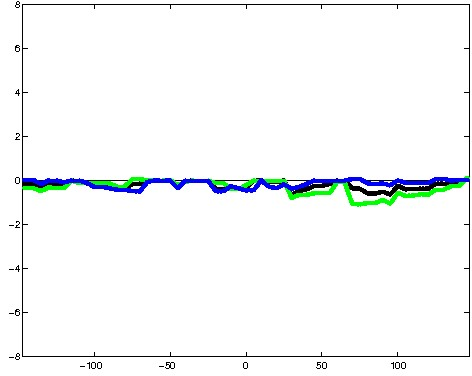
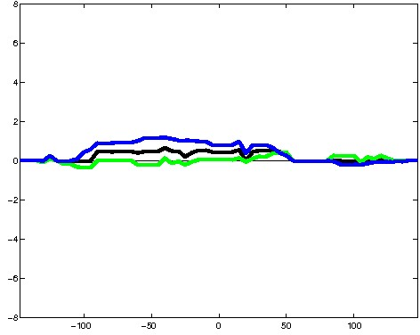
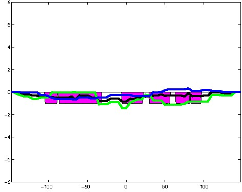
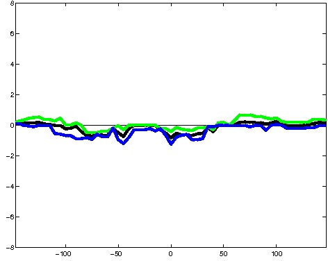
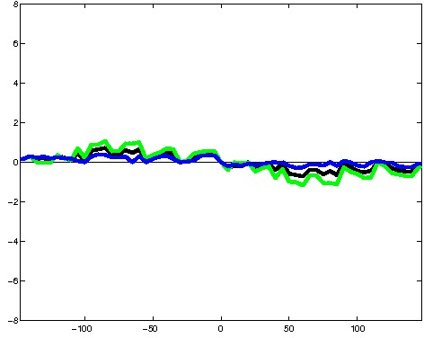
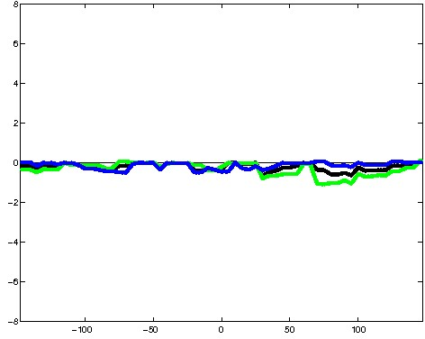
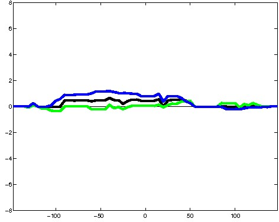
; picked in K562 (state 24:Quies, DNase); matched; chr3:177,646,069-177,646,363 (295bp)")
; picked in K562 (state 24:Quies, DNase); matched; chr4:114,514,609-114,514,903 (295bp)") 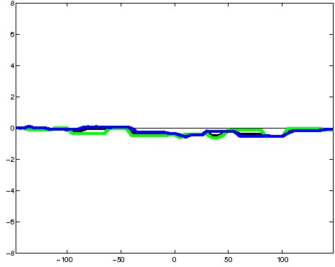
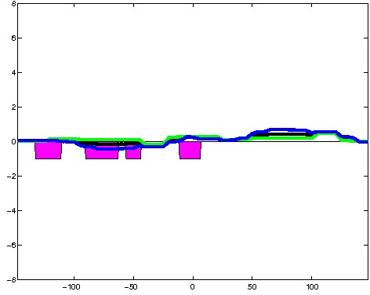
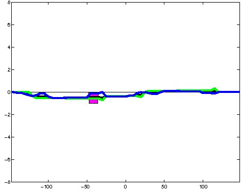
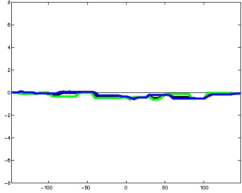
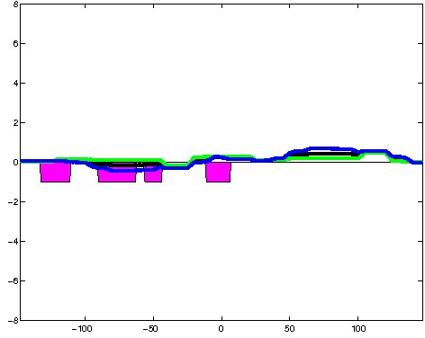
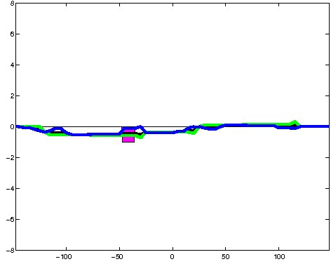
; picked in K562 (state 24:Quies, DNase); matched; chr3:77,165,489-77,165,783 (295bp)")
; picked in K562 (state 24:Quies, DNase); matched; chr15:68,038,369-68,038,663 (295bp)")
; picked in K562 (state 24:Quies, DNase); matched; chr14:93,016,249-93,016,543 (295bp)") 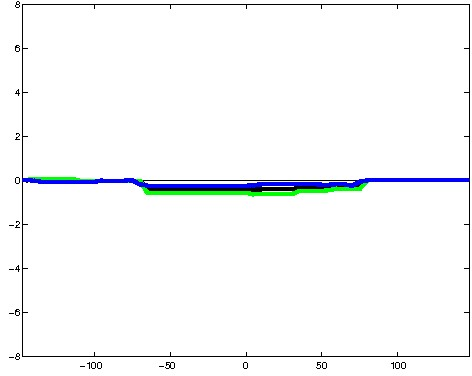
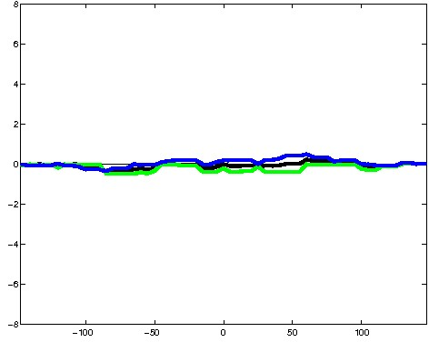
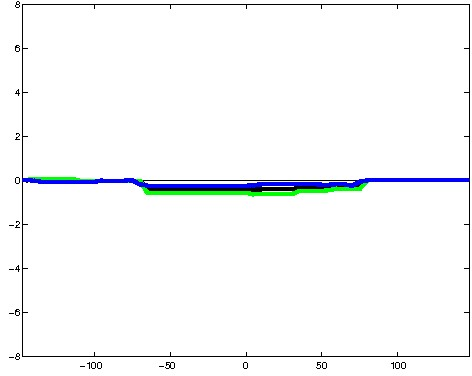
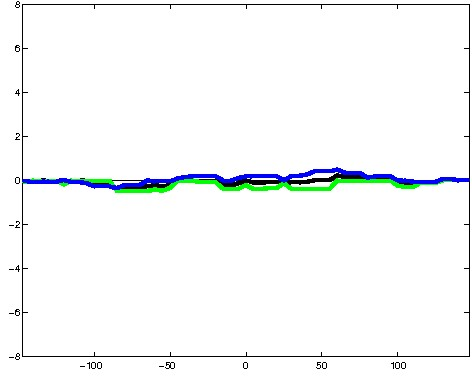
; picked in K562 (state 24:Quies, DNase); matched; chr18:52,401,349-52,401,643 (295bp)") 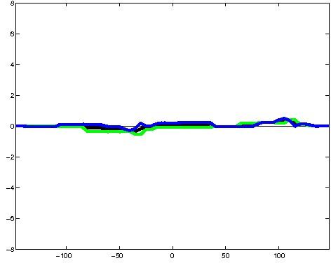
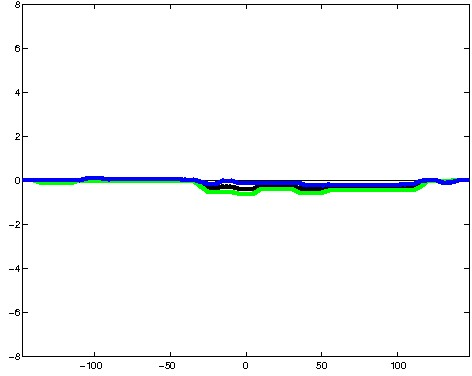
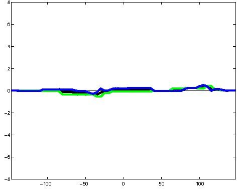
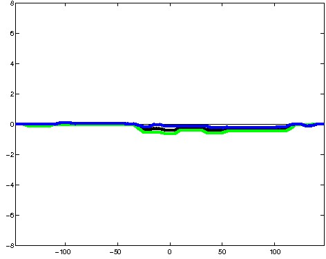
; picked in K562 (state 24:Quies, DNase); matched; chrX:44,221,929-44,222,223 (295bp)")
; picked in K562 (state 24:Quies, DNase); matched; chr4:184,471,549-184,471,843 (295bp)")
; picked in K562 (state 24:Quies, DNase); matched; chr2:62,056,269-62,056,563 (295bp)") 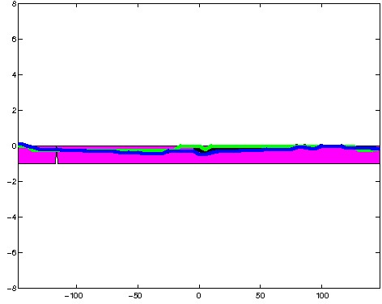
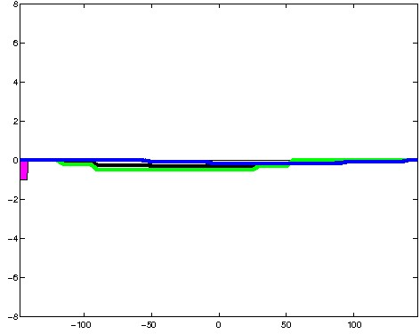
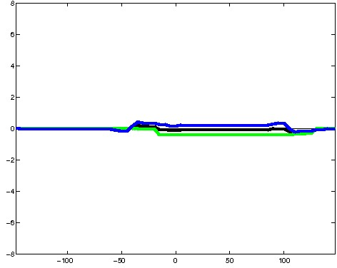
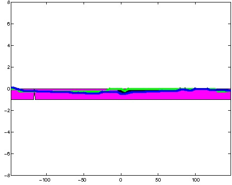
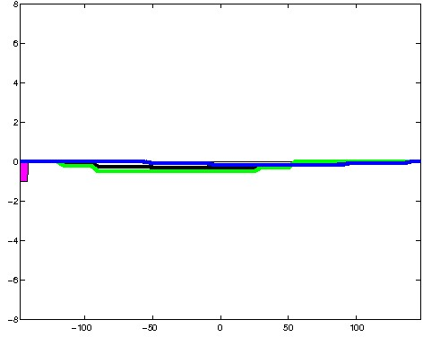
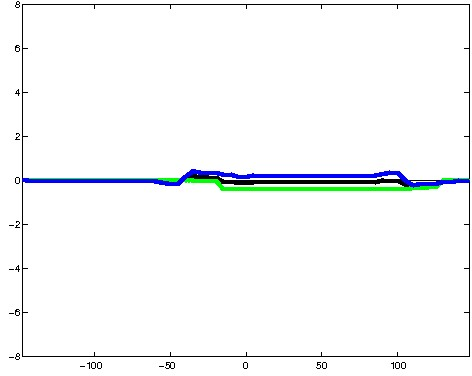
; picked in K562 (state 24:Quies, DNase); matched; chr7:136,191,629-136,191,923 (295bp)") 

; picked in K562 (state 24:Quies, DNase); matched; chr1:190,279,129-190,279,423 (295bp)")
; picked in K562 (state 24:Quies, DNase); matched; chr11:72,696,729-72,697,023 (295bp)")
; picked in K562 (state 24:Quies, DNase); matched; chr18:68,086,789-68,087,083 (295bp)")
; picked in K562 (state 24:Quies, DNase); matched; chr12:16,032,329-16,032,623 (295bp)") 

; picked in K562 (state 24:Quies, DNase); matched; chr3:143,767,369-143,767,663 (295bp)") 

; picked in K562 (state 24:Quies, DNase); matched; chr12:14,525,969-14,526,263 (295bp)")
; picked in K562 (state 24:Quies, DNase); matched; chr4:69,256,109-69,256,403 (295bp)") 


